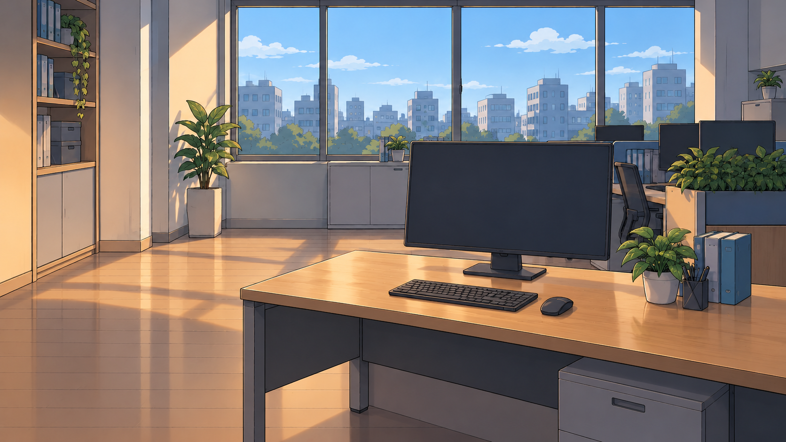
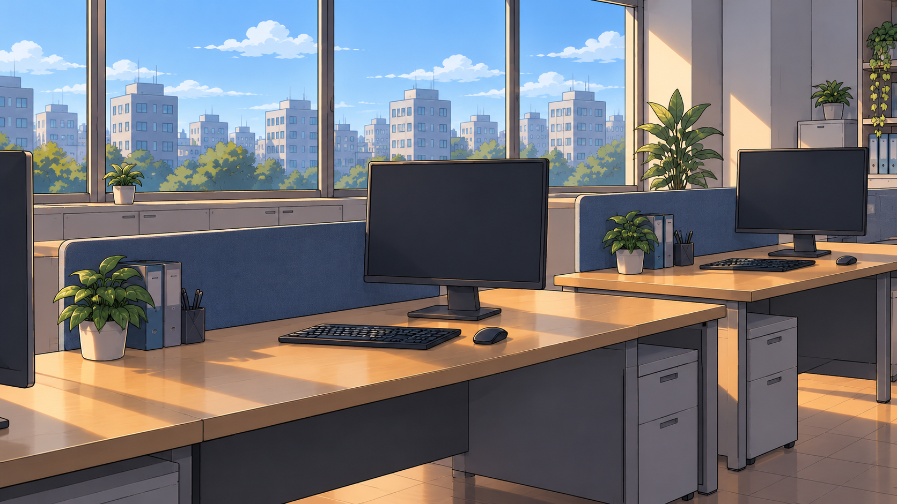
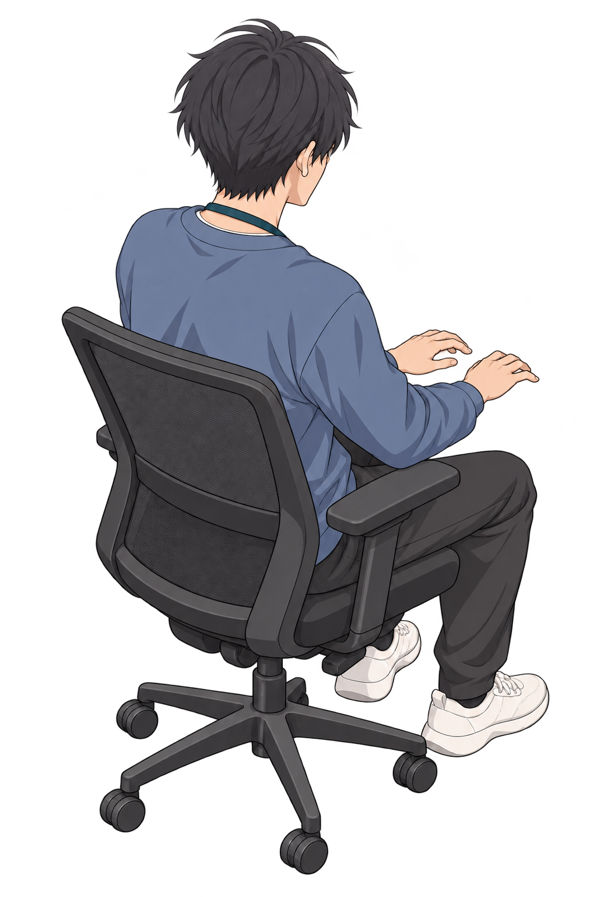
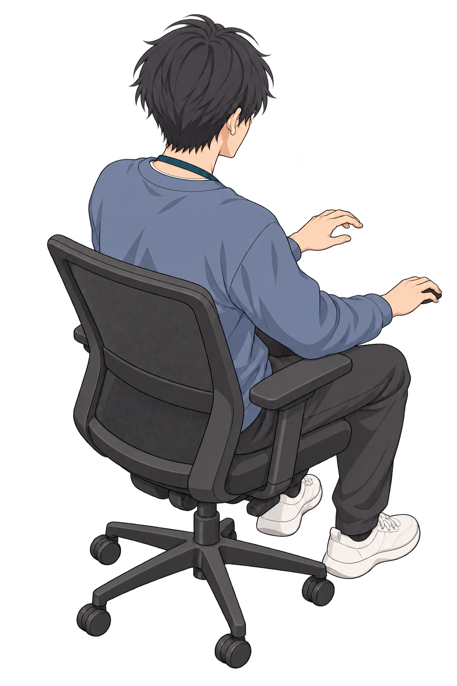
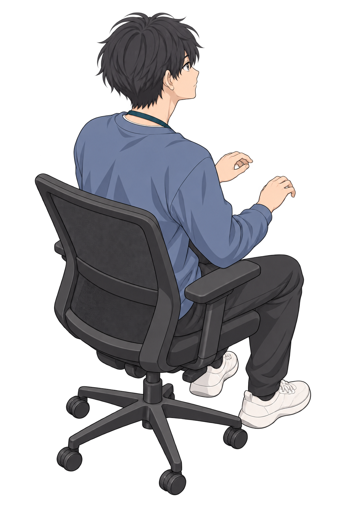
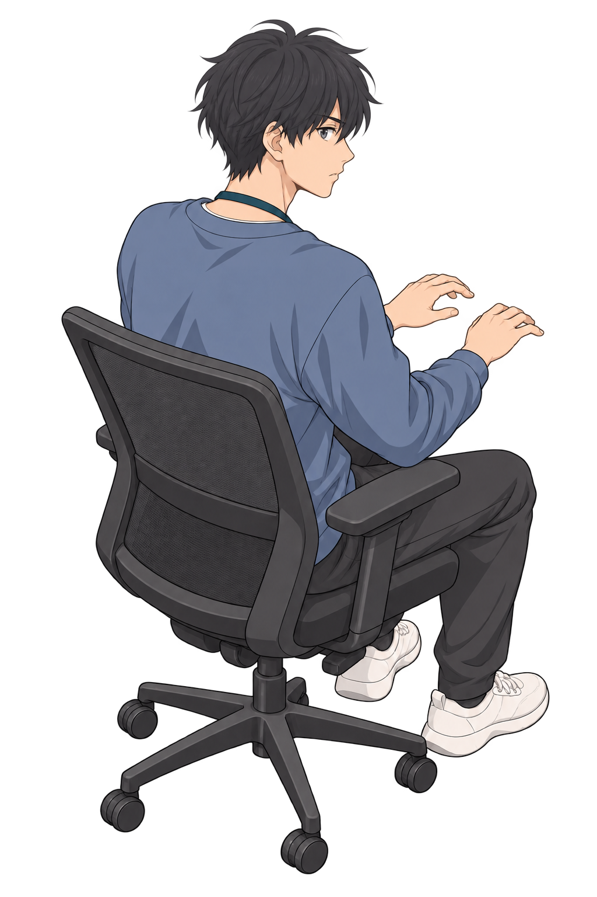
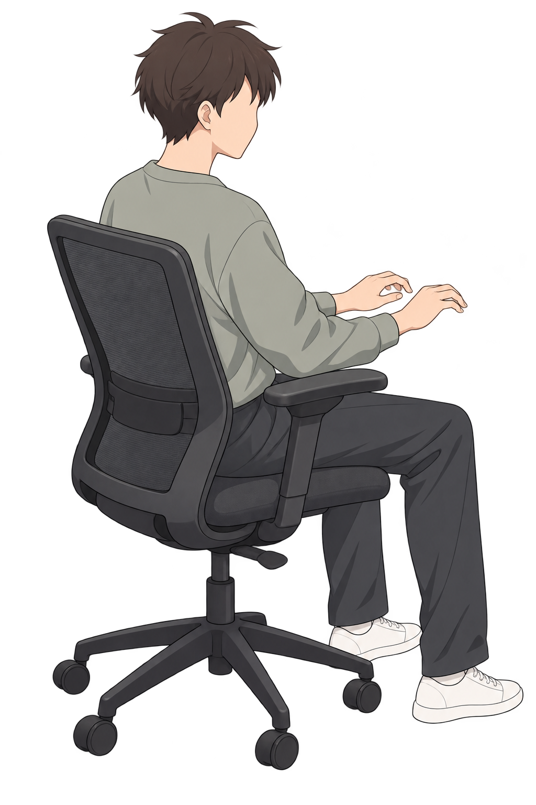
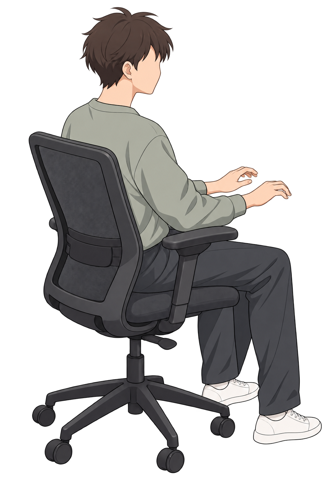
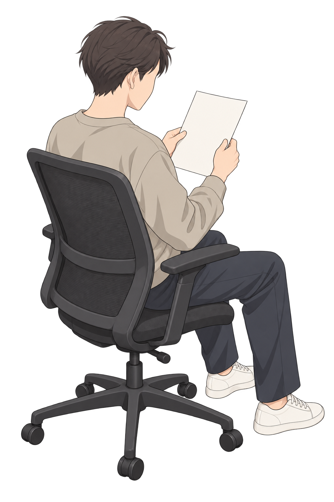
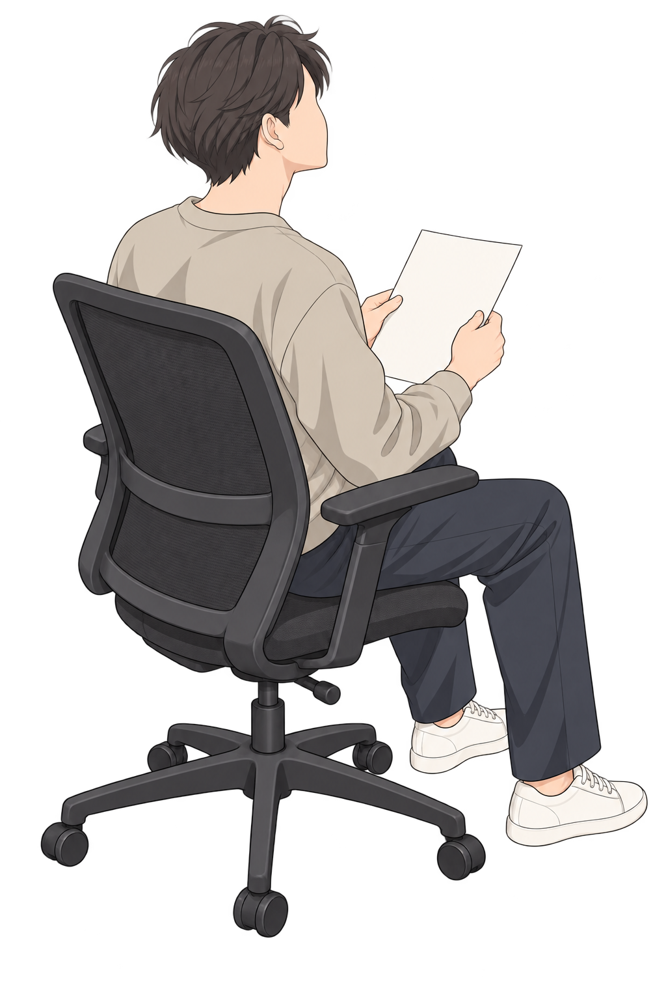

此为历史v03。 当前采用 03新版正面演出与雇佣关系（v04）。
03 · 新脚本美术与分层构图
公司机位、完整动作绘稿、双向消息和关系组件；保留当前脚本文字。
素材与代表构图检查，不是39秒新动画。人物、背景、屏幕和消息独立；同事可切换工作前后态。
制作记录层序与资源清单当前全片新增采用绘稿

room · 1672×941
neighbors · 1672×941
type · 1024×1536
click · 1024×1536
read · 1024×1536
look · 1024×1536
coworkerA · 1024×1536
coworkerA2 · 1024×1536
coworkerB · 1024×1536
coworkerB2 · 1024×1536可编辑界面与关系组件